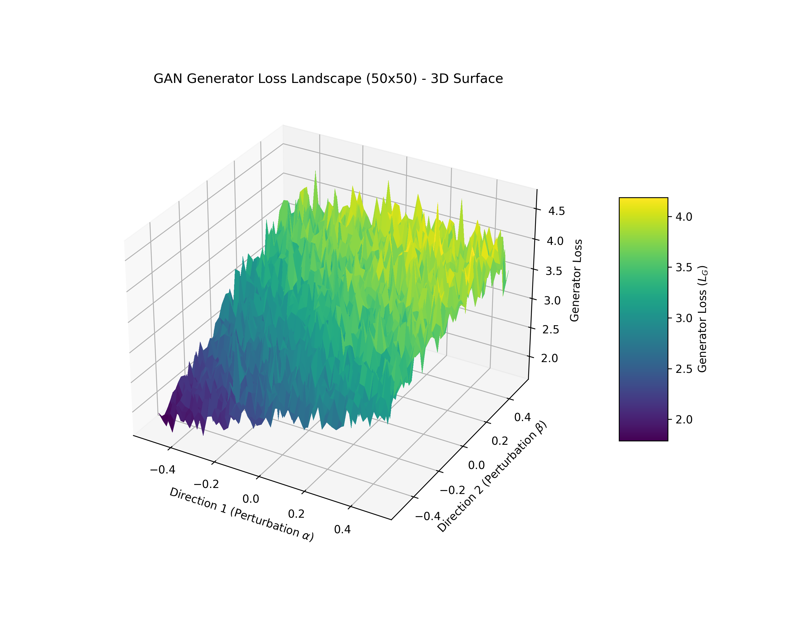

05 / Deep Learning Research
GAN Loss Landscape
Research tool for visualizing the optimization geometry of a trained GAN by perturbing its parameters along random directions and measuring Generator loss across a parameter-space grid.

What It Is
GAN Loss Landscape probes the multi-million parameter space around a trained Generative Adversarial Network to visualize how Generator loss curves fluctuate under controlled perturbations. Two random normalized directions are sampled through parameter space, and loss is systematically calculated across a 2D grid slice to reconstruct the local optimization topology.
The system outputs 1D directional cross-sections, 2D contour heatmaps, interactive 3D matplotlib surfaces, and exportable 3D PLY meshes for external analysis in Blender or MeshLab.
Why It Was Built
Training GANs is notoriously unstable (mode collapse, vanishing gradients, oscillatory dynamics). Standard 2D loss vs. epoch plots fail to reveal why training collapsed or whether a converged model sits in a flat, robust basin or a fragile, razor-thin sharp valley.
This tool brings geometric intuition to the black box of high-dimensional non-convex optimization.
Probing Methodology
Key Contributions & Features
- Directional Normalization: Implemented filter-wise normalization to eliminate artificial scale invariance artifacts in high-dimensional convolutional layers.
- Multi-Dimensional Visualization: Built automatic rendering pipelines for 1D trajectory slices, 2D contour plots, and 3D elevation maps.
- PLY 3D Mesh Export: Added export utilities to generate textured 3D polygon meshes from mathematical loss grids for high-fidelity spatial inspection.
- Dual Metric Comparison: Plotted Generator adversarial loss against empirical sample generation success rates.
Results & Takeaways
Enabled empirical inspection of the GAN minimax saddle-point landscape. High-resolution grid evaluations clearly distinguished well-generalized generator states (broad, shallow basins) from models vulnerable to mode collapse (sharp, chaotic ravines).